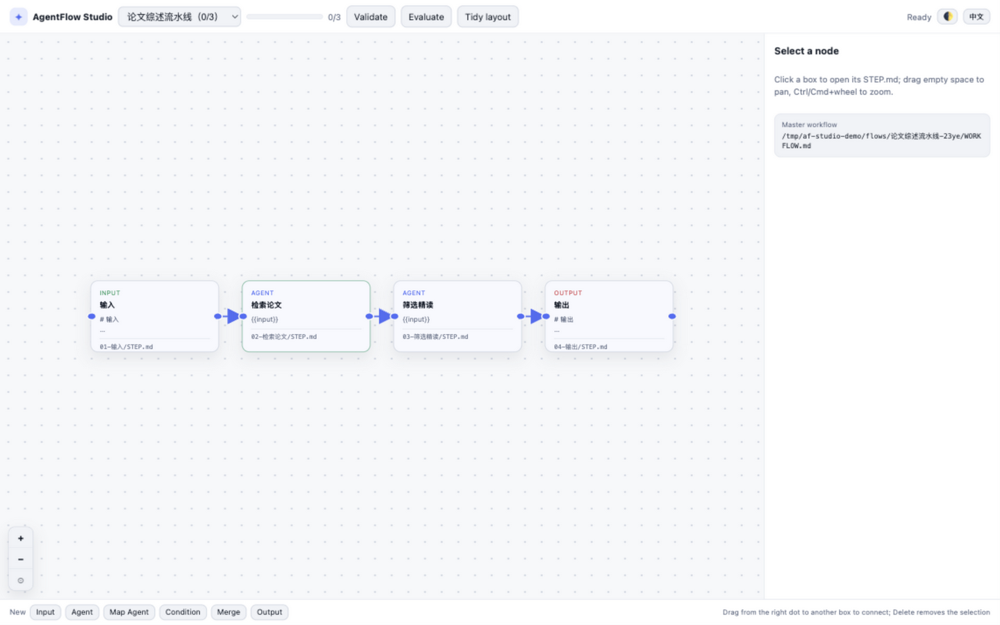
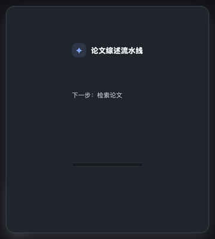

The plan belongs on disk,
not in the chat.
AgentFlow turns long agent sessions into step-by-step Markdown workflows with deterministic Boolean gates — plus a visual Studio canvas and a floating desktop pet. Zero dependencies. Any agent. Three platforms.
01Why AgentFlow
Agents lose the plot on long tasks: plans live in ephemeral chat context, progress is "trust me", and branching is a prompt. AgentFlow keeps all three on disk — reviewable, diffable, provable.
Markdown is the source of truth
Every step is a STEP.md you can read, edit and commit. flow.json is derived metadata, never a lock-in database.
Deterministic gates
Eight Boolean gate types with strict predicates. Branching is decided by a truth table a static validator can prove — not by an LLM vibe check.
Execution bookkeeping
next / done / undo / status give session-less agents an explicit sense of progress. Blocked and ready steps are computed, not guessed.
02Logic gates, hard rules
Predicates are restricted to truthy / falsy / nonEmpty — never natural language. Upstream steps output booleans; gates route them.
03Studio — a canvas over your files
af studio serves an interactive canvas on 127.0.0.1. Drag nodes, connect edges, pick branches, edit STEP.md inline — while the agent edits the same files in your terminal, the canvas refreshes live over SSE.

Bilingual UI and light/dark themes built in; every topology change is validated before it touches disk.
04Desktop pet — the flow that follows you

A tiny always-on-top card: flow name, progress bar, next step. Click to expand into the full canvas window.
- One file, one command — studio-pet/run-pet.sh (or double-click run-pet.command on macOS).
- Zero new downloads — reuses the Electron runtime already installed by clawd-on-desk; the Studio server runs in-process.
- Host it inside clawd — deep integration with the clawd desktop pet (IPC expand/collapse, LaunchAgent autostart) documented in HOST-WITH-CLAWD.md.
- No Electron? No problem — everything except the floating window works in any browser via af studio, on macOS, Linux and Windows.
05Install in one line
Pure Node ESM, zero dependencies, Node ≥ 18. The installer also drops the agent skill into detected skill directories.
bash install.shpowershell -ExecutionPolicy Bypass -File install.ps1git clone https://github.com/kanghelyu/agent-flow && cd agent-flowStorage: ~/.agent-flow (override with AF_HOME). Per-project flows: --root .af — commit the Markdown, ignore state.json.